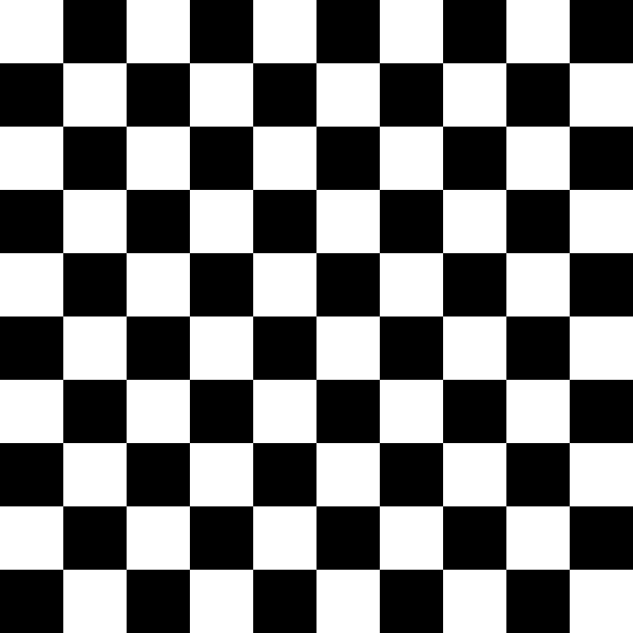
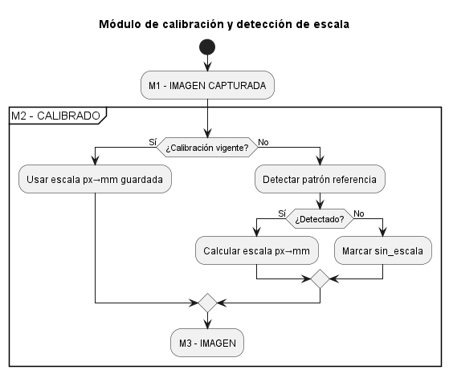
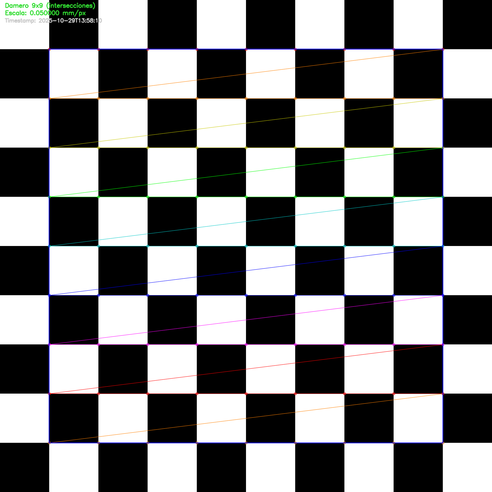

2.3. M2 - Calibración#
Para poder extraer las dimensiones reales (mm) de la longitud, anchura y altura es necesario que el sistema disponga de algún tipo de calibración. Para ello la forma más rápida es disponer de un damero (Checkerboard) de dimensiones exactas y conocidas como el de la Figura 2.4, en el que cada una de las inserciones internas mide exactamente 10 mm de lado.
{kind=link}

Figura 2.4 Checkerdoard (damero) para calibración#
Si \(𝐿_{px}\) es la longitud medida en píxeles de un objeto cuya longitud real \(L_{mm}\) es conocida (10 mm en nuestro damero), la escala se define como:
Para robustez, se usa la mediana de múltiples aristas horizontales y verticales [Zang, Z., 2020]. La incertidumbre relativa de primer orden es:
El flujo UML que resuelve la calibración es el recogido en la Figura 2.5:
{kind=link}

Figura 2.5 UML proceso de calibración#
## IMPORT Y UTILIDAES DE E/S
# Importa librerías y define utilidades para leer/escribir JSON con seguridad.
import json
from dataclasses import dataclass, asdict
from pathlib import Path
from typing import Optional, Dict, Any, Tuple
import numpy as np
import cv2
def load_json(path: Path) -> Optional[dict]:
"""Carga un JSON si existe; devuelve None si no existe."""
if not path.exists():
return None
with path.open("r", encoding="utf-8") as f:
return json.load(f)
def save_json(path: Path, data: dict) -> None:
"""Guarda un dict como JSON (UTF-8, con indentado) y crea carpetas si no existen."""
path.parent.mkdir(parents=True, exist_ok=True)
with path.open("w", encoding="utf-8") as f:
json.dump(data, f, indent=2, ensure_ascii=False)
## CONFIGURACION
# fija rutas y parámetros del patrón para el damero
# === CONFIG (ajustada al damero de calibrado) ===================================
CALIB_FILE = Path("./calibracion_px_mm.json")
# Patrón de referencia: DAMERO 10x10 cuadrados => 9x9 intersecciones internas
CHECKERBOARD_SQUARE_MM = 10.0
CHECKERBOARD_SQUARES_COLS = 10 # número de cuadrados horizontales
CHECKERBOARD_SQUARES_ROWS = 10 # número de cuadrados verticales
CHECKERBOARD_INTERNAL_COLS = CHECKERBOARD_SQUARES_COLS - 1 # 9 intersecciones internas
CHECKERBOARD_INTERNAL_ROWS = CHECKERBOARD_SQUARES_ROWS - 1 # 9 intersecciones internas
# Agregación robusta de distancias entre esquinas: "median" o "mean"
AGGREGATION = "median"
# Usa la imagen del damero de referencia.
IMG_PATH = Path(".././assets/checkerboard_10mm_200pxmm.png")
## ESTRUCTURA DE CALIBRACION Y PERSISTENCIA
# Define la estructura (dataclass) que se guardará en JSON y las funciones de lectura/escritura
# del fichero de calibración
@dataclass
class Calibration:
"""
Estructura persistente de calibración.
- mm_per_px: escala (milímetros por píxel).
- method: método usado ("checkerboard").
- meta: metadatos/diagnósticos (estadísticos de distancias en píxeles, etc.).
"""
mm_per_px: float
method: str
meta: Dict[str, Any]
def load_calibration(path: Path) -> Optional[Calibration]:
"""Lee la calibración desde JSON; devuelve None si no existe o si hay formato inválido."""
data = load_json(path)
if data is None:
return None
try:
return Calibration(
mm_per_px=float(data["mm_per_px"]),
method=str(data["method"]),
meta=dict(data["meta"]),
)
except Exception:
return None
def save_calibration(path: Path, cal: Calibration) -> None:
"""Persistencia de calibración a JSON."""
save_json(path, asdict(cal))
## DETECCIÓN DEL DAMERO Y CÁLCULO mm/px
def detect_checkerboard_scale(
img_bgr: np.ndarray,
cols_internal: int,
rows_internal: int,
square_mm: float,
aggregation: str = "median"
) -> Optional[Tuple[float, Dict[str, Any]]]:
"""
Detecta un damero de (cols_internal x rows_internal) intersecciones internas.
Calcula mm/px usando la mediana (por defecto) de distancias entre esquinas adyacentes.
Devuelve: (mm_per_px, diagnostics) si detecta; None si no detecta.
"""
gray = cv2.cvtColor(img_bgr, cv2.COLOR_BGR2GRAY)
flags = cv2.CALIB_CB_ADAPTIVE_THRESH | cv2.CALIB_CB_NORMALIZE_IMAGE
found, corners = cv2.findChessboardCorners(gray, (cols_internal, rows_internal), flags)
if not found or corners is None:
return None
# Refinamiento subpíxel
criteria = (cv2.TERM_CRITERIA_EPS + cv2.TERM_CRITERIA_MAX_ITER, 50, 1e-4)
corners = cv2.cornerSubPix(gray, corners, (11, 11), (-1, -1), criteria)
corners = corners.reshape(-1, 2) # N x 2
# Distancias horizontales
horiz = []
for r in range(rows_internal):
for c in range(cols_internal - 1):
i = r * cols_internal + c
j = r * cols_internal + (c + 1)
d = np.linalg.norm(corners[i] - corners[j])
if d > 0:
horiz.append(d)
# Distancias verticales
vert = []
for r in range(rows_internal - 1):
for c in range(cols_internal):
i = r * cols_internal + c
j = (r + 1) * cols_internal + c
d = np.linalg.norm(corners[i] - corners[j])
if d > 0:
vert.append(d)
dists = np.array(horiz + vert, dtype=float)
if dists.size == 0:
return None
# px por cuadrado (mediana por robustez ante outliers)
px_per_square = np.median(dists) if aggregation == "median" else np.mean(dists)
mm_per_px = square_mm / px_per_square
diagnostics = {
"pattern": "checkerboard",
"internal_cols": int(cols_internal),
"internal_rows": int(rows_internal),
"square_mm": float(square_mm),
"edges_count": int(dists.size),
"px_per_square_summary": {
"mean": float(np.mean(dists)),
"median": float(np.median(dists)),
"std": float(np.std(dists, ddof=1)) if dists.size > 1 else 0.0
},
"aggregation": aggregation
}
return mm_per_px, diagnostics
## FUNCIÓN DE CALIBRACIÓN
# implementa literalmente el diagrama de decisiones:
# - usar calibración vigente (permanente) salvo que el usuario fuerce recalibración;
# - si no hay calibración o se fuerza, intenta detectar y calcular;
# - si falla, `sin_escala`
def run_calibration_pipeline_checkerboard(
calib_file: Path,
img_path: Path,
cols_internal: int,
rows_internal: int,
square_mm: float,
aggregation: str = "median",
force_recalibrate: bool = False
) -> Dict[str, Any]:
"""
UML “M2 - Calibración de escala”:
if (¿Calibración vigente?) then (Sí)
:Usar escala px→mm guardada;
else (No)
:Detectar patrón referencia;
if (¿Detectado?) then (Sí)
:Calcular escala px→mm; (y guardar)
else (No)
:Marcar sin_escala;
'Vigente' = existe calibración en disco y NO se fuerza recalibración.
"""
# 1) ¿Calibración 'vigente'?
if not force_recalibrate:
cal = load_calibration(calib_file)
if cal is not None and cal.method == "checkerboard":
return {
"estado": "vigente",
"mm_per_px": cal.mm_per_px,
"method": cal.method,
"meta": cal.meta
}
# 2) No vigente (o se fuerza) -> Detectar patrón referencia
if not img_path.exists():
return {"estado": "sin_escala", "motivo": f"Imagen no encontrada: {str(img_path)}"}
img = cv2.imread(str(img_path))
if img is None:
return {"estado": "sin_escala", "motivo": f"No se pudo abrir la imagen: {str(img_path)}"}
res = detect_checkerboard_scale(
img_bgr=img,
cols_internal=cols_internal,
rows_internal=rows_internal,
square_mm=square_mm,
aggregation=aggregation
)
# 3) ¿Detectado?
if res is None:
return {"estado": "sin_escala", "motivo": "No se detectó el damero en la imagen"}
# 4) Calcular escala y guardar
mm_per_px, diag = res
cal = Calibration(
mm_per_px=float(mm_per_px),
method="checkerboard",
meta={"diagnostics": diag}
)
save_calibration(calib_file, cal)
return {
"estado": "recalibrado",
"mm_per_px": cal.mm_per_px,
"method": cal.method,
"meta": cal.meta
}
Para calibrar el sistema basta con ejecutar una llamada a la función anterior run_calibration_pipeline_checkerboard() del siguiente modo:
calibration = run_calibration_pipeline_checkerboard(
calib_file=CALIB_FILE,
img_path=IMG_PATH,
cols_internal=CHECKERBOARD_INTERNAL_COLS,
rows_internal=CHECKERBOARD_INTERNAL_ROWS,
square_mm=CHECKERBOARD_SQUARE_MM,
aggregation=AGGREGATION,
force_recalibrate=False
)
print("Resultado de la calibración: \n")
import json
print(json.dumps(calibration, indent=4, ensure_ascii=False))
Resultado de la calibración:
{
"estado": "vigente",
"mm_per_px": 0.05,
"method": "checkerboard",
"meta": {
"diagnostics": {
"pattern": "checkerboard",
"internal_cols": 9,
"internal_rows": 9,
"square_mm": 10.0,
"edges_count": 144,
"px_per_square_summary": {
"mean": 200.0,
"median": 200.0,
"std": 0.0
},
"aggregation": "median"
}
}
}
Este módulo también proporciona algunas utilidades de conversión que permiten, a partir de un calibrado: obtener la escala (get_mm_per_px), traducir pixeles a mm (px_to_mm) o transformar mm a pixeles (mm_to_px).
## UTILIDADES DE CONVERSION
# Funciones auxiliares para convertir medidas en el pipeline de visión.
def get_mm_per_px(calib_file: Path = CALIB_FILE) -> float:
"""Devuelve la escala mm/px leída del archivo de calibración."""
cal = load_calibration(calib_file)
if cal is None:
raise RuntimeError(f"No hay calibración guardada en {calib_file}. Ejecuta el pipeline primero.")
return float(cal.mm_per_px)
def px_to_mm(value_px: float, mm_per_px: float) -> float:
"""Convierte longitudes en píxeles a milímetros."""
return float(value_px) * float(mm_per_px)
def mm_to_px(value_mm: float, mm_per_px: float) -> float:
"""Convierte longitudes en milímetros a píxeles."""
if mm_per_px <= 0:
raise ValueError("mm_per_px debe ser positivo.")
return float(value_mm) / float(mm_per_px)
Un ejemplo de uso de estas funciones sería:
print(f"Escala actual mm/px: {get_mm_per_px()}")
print(f"Longitud en milímetros de 1250 px: {px_to_mm(1250, get_mm_per_px())} mm")
print(f"Longitud en piexels de 100 mm: {mm_to_px(100, get_mm_per_px())} pixeles")
Escala actual mm/px: 0.05
Longitud en milímetros de 1250 px: 62.5 mm
Longitud en piexels de 100 mm: 2000.0 pixeles
Para garantizar y auditar que el proceso de calibración se realiza adecuadamente se han definido algunas funciones auxiliares:
Control visual y verificación del damero
## OVERLAY DE CONTROL VISUAL Y .png DIAGNÓSTICO
# Su función es verificar y documentar que la detección ha sido correcta.
from datetime import datetime
def overlay_checkerboard_and_save(
img_path: Path,
out_path: Path,
cols_internal: int,
rows_internal: int,
mm_per_px: float = None,
draw_rect: bool = True
) -> dict:
"""
Dibuja esquinas del damero y anota mm/px (si disponible). Guarda PNG.
Devuelve dict con 'ok' y detalles/motivo de fallo.
"""
if not img_path.exists():
return {"ok": False, "motivo": f"Imagen no encontrada: {str(img_path)}"}
img = cv2.imread(str(img_path))
if img is None:
return {"ok": False, "motivo": f"No se pudo abrir la imagen: {str(img_path)}"}
gray = cv2.cvtColor(img, cv2.COLOR_BGR2GRAY)
flags = cv2.CALIB_CB_ADAPTIVE_THRESH | cv2.CALIB_CB_NORMALIZE_IMAGE
found, corners = cv2.findChessboardCorners(gray, (cols_internal, rows_internal), flags)
vis = img.copy()
if not found or corners is None:
cv2.putText(vis, "Checkerboard NO detectado", (20, 40),
cv2.FONT_HERSHEY_SIMPLEX, 1.0, (0, 0, 255), 2, cv2.LINE_AA)
out_path.parent.mkdir(parents=True, exist_ok=True)
ok = cv2.imwrite(str(out_path), vis)
return {"ok": bool(ok), "motivo": "No se detecto el damero; PNG guardado con aviso.", "out": str(out_path)}
criteria = (cv2.TERM_CRITERIA_EPS + cv2.TERM_CRITERIA_MAX_ITER, 50, 1e-4)
corners = cv2.cornerSubPix(gray, corners, (11, 11), (-1, -1), criteria)
cv2.drawChessboardCorners(vis, (cols_internal, rows_internal), corners, found)
if draw_rect:
pts = corners.reshape(-1, 2)
x_min, y_min = np.floor(pts.min(axis=0)).astype(int)
x_max, y_max = np.ceil(pts.max(axis=0)).astype(int)
cv2.rectangle(vis, (x_min, y_min), (x_max, y_max), (255, 0, 0), 2)
y0 = 30
cv2.putText(vis, f"Damero {cols_internal}x{rows_internal} (intersecciones)", (20, y0),
cv2.FONT_HERSHEY_SIMPLEX, 0.8, (50, 220, 50), 2, cv2.LINE_AA)
y0 += 30
if mm_per_px is not None:
cv2.putText(vis, f"Escala: {mm_per_px:.6f} mm/px", (20, y0),
cv2.FONT_HERSHEY_SIMPLEX, 0.8, (50, 220, 50), 2, cv2.LINE_AA)
y0 += 30
cv2.putText(vis, f"Timestamp: {datetime.now().isoformat(timespec='seconds')}", (20, y0),
cv2.FONT_HERSHEY_SIMPLEX, 0.7, (200, 200, 200), 2, cv2.LINE_AA)
out_path.parent.mkdir(parents=True, exist_ok=True)
ok = cv2.imwrite(str(out_path), vis)
return {"ok": bool(ok), "motivo": "" if ok else "cv2.imwrite fallo", "out": str(out_path)}
El siguiente código muestra cómo ejecutar la función overlay_checkerboard_and_save.
from pathlib import Path
from IPython.display import Image, display
# Lee la escala guardada (mm/px) para anotarla en la imagen
mm_per_px_annot = get_mm_per_px()
OUT_PNG = Path("./diagnosticos/diagnostico_calibracion.png")
overlay_info = overlay_checkerboard_and_save(
img_path=IMG_PATH,
out_path=OUT_PNG,
cols_internal=CHECKERBOARD_INTERNAL_COLS, # 9
rows_internal=CHECKERBOARD_INTERNAL_ROWS, # 9
mm_per_px=mm_per_px_annot, # se anotará "Escala: X mm/px"
draw_rect=True
)
# Mostrar la imagen resultante en el notebook
DISPLAY_WIDTH = 800 # px
display(Image(filename=str(OUT_PNG), embed=True, width=DISPLAY_WIDTH))
# (Opcional) Ver detalles del overlay/guardado
print(json.dumps(overlay_info, indent=4, ensure_ascii=False))
{kind=link}

{
"ok": true,
"motivo": "",
"out": "diagnosticos/diagnostico_calibracion.png"
}
Validación numérica
Esta función lee la calibración existente y estima la incertidumbre según la ecuación (2.1)
## VALIDACIÓN NUMÉRICA
# Lee la calibración y reporta mm/px y px/mm estimado la incertidumbre
def load_calibration_dict(path: Path) -> dict:
if not path.exists():
raise FileNotFoundError(f"No existe el archivo de calibración: {path}")
with path.open("r", encoding="utf-8") as f:
return json.load(f)
def validation_report(calib_json: dict, assume_square_exact_mm=True, square_sigma_mm=0.0):
"""
Reporta mm/px, px/mm e incertidumbre estimada.
- Si conoces la tolerancia del patrón (p.ej. ±0.02 mm), usa assume_square_exact_mm=False y square_sigma_mm=0.02.
"""
mm_per_px = float(calib_json["mm_per_px"])
px_per_mm = 1.0 / mm_per_px if mm_per_px > 0 else np.nan
diag = calib_json.get("meta", {}).get("diagnostics", {})
pattern = diag.get("pattern", "checkerboard")
px_sum = diag.get("px_per_square_summary", {})
aggregation = diag.get("aggregation", "median")
square_mm = float(diag.get("square_mm", np.nan))
center_px = px_sum.get("median" if aggregation == "median" else "mean", None)
std_px = px_sum.get("std", None)
n_edges = diag.get("edges_count", None)
sigma_s = None
ci95 = (None, None)
details = {}
if center_px and std_px is not None and center_px > 0:
sigma_square = 0.0 if assume_square_exact_mm else float(square_sigma_mm)
# Error estándar del estimador: media vs mediana
if n_edges and n_edges > 1:
if aggregation == "mean":
se_px = std_px / np.sqrt(n_edges)
else:
se_px = 1.253 * std_px / np.sqrt(n_edges) # aprox. SE de la mediana
else:
se_px = std_px
# Propagación de errores (1er orden)
rel_sq = (sigma_square / square_mm)**2 if (square_mm and square_mm > 0) else 0.0
rel_px = (se_px / center_px)**2
rel_s = np.sqrt(rel_sq + rel_px)
sigma_s = rel_s * mm_per_px
ci95 = (mm_per_px - 1.96 * sigma_s, mm_per_px + 1.96 * sigma_s)
details = {
"center_px": center_px,
"std_px_edges": std_px,
"se_px_used": se_px,
"n_edges": n_edges,
"aggregation": aggregation,
"square_mm": square_mm,
"sigma_square_mm": sigma_square,
"rel_uncertainty_s": rel_s
}
return {
"mm_per_px": mm_per_px,
"px_per_mm": px_per_mm,
"method": calib_json.get("method", ""),
"pattern": pattern,
"uncertainty_sigma_mm_per_px": sigma_s,
"ci95_mm_per_px": ci95,
"diagnostics_available": (std_px is not None),
"details": details
}
# === Ejecutar validación ===
print("Validación numérica e incertidumbre:")
cal_data = load_calibration_dict(CALIB_FILE)
report = validation_report(cal_data, assume_square_exact_mm=True, square_sigma_mm=0.0)
print(json.dumps(report, indent=4, ensure_ascii=False))
Validación numérica e incertidumbre:
{
"mm_per_px": 0.05,
"px_per_mm": 20.0,
"method": "checkerboard",
"pattern": "checkerboard",
"uncertainty_sigma_mm_per_px": 0.0,
"ci95_mm_per_px": [
0.05,
0.05
],
"diagnostics_available": true,
"details": {
"center_px": 200.0,
"std_px_edges": 0.0,
"se_px_used": 0.0,
"n_edges": 144,
"aggregation": "median",
"square_mm": 10.0,
"sigma_square_mm": 0.0,
"rel_uncertainty_s": 0.0
}
}
(Re)calibración forzada
El usuario puede querer forzar una nueva calibración. La función recalibrar_y_generar_png() fuerza recálculo con el damero y genera un PNG de control visual.
## UTILIDAD DE RECALIBRACION FORZADA CON .png DE DIAGNOSTICO
def recalibrar_y_generar_png(
calib_file: Path,
img_path: Path,
cols_internal: int,
rows_internal: int,
square_mm: float,
aggregation: str = "median",
out_png: Path = Path("./diagnosticos/diagnostico_calibracion.png"),
timestamp_bgr: tuple = (0, 0, 255), # ROJO en BGR (por defecto)
box_bgr: tuple = (255, 0, 0), # Azul para rectángulo envolvente
text_bgr: tuple = (50, 220, 50) # Verde para textos informativos
) -> dict:
"""
Fuerza la recalibración usando el damero de 'img_path' y genera un PNG de diagnóstico.
- Dibuja esquinas detectadas, rectángulo envolvente y anota mm/px.
- Pinta el timestamp en ROJO (BGR=(0,0,255) por defecto).
Parámetros
----------
calib_file : Path
Ruta del JSON donde se guardará la calibración (mm/px, meta).
img_path : Path
Ruta de la imagen del damero (10x10 → 9x9 intersecciones internas).
cols_internal, rows_internal : int
Intersecciones internas del damero (p.ej., 9x9 para 10x10 cuadrados).
square_mm : float
Tamaño físico del lado de cada cuadrado (mm), p.ej. 10.0.
aggregation : {"median","mean"}
Agregación para estimar px por cuadrado (robusta por defecto: "median").
out_png : Path
Ruta de salida del PNG de diagnóstico.
timestamp_bgr : tuple
Color BGR para el timestamp (rojo por defecto).
box_bgr : tuple
Color BGR del rectángulo envolvente (azul por defecto).
text_bgr : tuple
Color BGR para textos informativos (verde por defecto).
Returns
-------
dict con claves:
- "recal": dict con el resultado de la recalibración (estado, mm_per_px, meta)
- "overlay": dict con {"ok": bool, "out": str(ruta_png)} (o motivo de fallo)
- "mm_per_px": float o None (si no disponible)
- "estado": str (e.g., "recalibrado", "vigente", "sin_escala")
"""
from datetime import datetime
# 1) Forzar recalibración (usa la función del pipeline del notebook)
recal = run_calibration_pipeline_checkerboard(
calib_file=calib_file,
img_path=img_path,
cols_internal=cols_internal,
rows_internal=rows_internal,
square_mm=square_mm,
aggregation=aggregation,
force_recalibrate=True
)
# 2) Preparar overlay (detectar de nuevo para dibujar) con TIMESTAMP ROJO
if not img_path.exists():
return {
"recal": recal,
"overlay": {"ok": False, "motivo": f"Imagen no encontrada: {str(img_path)}"},
"mm_per_px": float(recal["mm_per_px"]) if isinstance(recal, dict) and "mm_per_px" in recal else None,
"estado": recal.get("estado") if isinstance(recal, dict) else None
}
img = cv2.imread(str(img_path))
if img is None:
return {
"recal": recal,
"overlay": {"ok": False, "motivo": f"No se pudo abrir la imagen: {str(img_path)}"},
"mm_per_px": float(recal["mm_per_px"]) if isinstance(recal, dict) and "mm_per_px" in recal else None,
"estado": recal.get("estado") if isinstance(recal, dict) else None
}
gray = cv2.cvtColor(img, cv2.COLOR_BGR2GRAY)
flags = cv2.CALIB_CB_ADAPTIVE_THRESH | cv2.CALIB_CB_NORMALIZE_IMAGE
found, corners = cv2.findChessboardCorners(gray, (cols_internal, rows_internal), flags)
vis = img.copy()
if not found or corners is None:
cv2.putText(
vis, "Checkerboard NO detectado", (20, 40),
cv2.FONT_HERSHEY_SIMPLEX, 1.0, (0, 0, 255), 2, cv2.LINE_AA
)
# timestamp en rojo aunque no haya detección
cv2.putText(
vis, f"Timestamp: {datetime.now().isoformat(timespec='seconds')}", (20, 80),
cv2.FONT_HERSHEY_SIMPLEX, 0.7, timestamp_bgr, 2, cv2.LINE_AA
)
else:
# Refinar esquinas y dibujarlas
criteria = (cv2.TERM_CRITERIA_EPS + cv2.TERM_CRITERIA_MAX_ITER, 50, 1e-4)
corners = cv2.cornerSubPix(gray, corners, (11, 11), (-1, -1), criteria)
cv2.drawChessboardCorners(vis, (cols_internal, rows_internal), corners, found)
# Rectángulo envolvente
pts = corners.reshape(-1, 2)
x_min, y_min = np.floor(pts.min(axis=0)).astype(int)
x_max, y_max = np.ceil(pts.max(axis=0)).astype(int)
cv2.rectangle(vis, (x_min, y_min), (x_max, y_max), box_bgr, 2)
# Textos informativos (verde por defecto)
y0 = 30
cv2.putText(
vis, f"Damero {cols_internal}x{rows_internal} (intersecciones)", (20, y0),
cv2.FONT_HERSHEY_SIMPLEX, 0.8, text_bgr, 2, cv2.LINE_AA
)
y0 += 30
mmpp = float(recal["mm_per_px"]) if isinstance(recal, dict) and "mm_per_px" in recal else None
if mmpp is not None:
cv2.putText(
vis, f"Escala: {mmpp:.6f} mm/px", (20, y0),
cv2.FONT_HERSHEY_SIMPLEX, 0.8, text_bgr, 2, cv2.LINE_AA
)
y0 += 30
# TIMESTAMP en ROJO
cv2.putText(
vis, f"Timestamp: {datetime.now().isoformat(timespec='seconds')}", (20, y0),
cv2.FONT_HERSHEY_SIMPLEX, 0.7, timestamp_bgr, 2, cv2.LINE_AA
)
# 3) Guardar PNG
out_png.parent.mkdir(parents=True, exist_ok=True)
ok = cv2.imwrite(str(out_png), vis)
return {
"recal": recal,
"overlay": {"ok": bool(ok), "out": str(out_png) if ok else None},
"mm_per_px": float(recal["mm_per_px"]) if isinstance(recal, dict) and "mm_per_px" in recal else None,
"estado": recal.get("estado") if isinstance(recal, dict) else None
}
Un ejemplo de uso de esta función de recalibrado forzado sería:
OUT_PNG = Path("./diagnosticos/recalibrado.png")
res = recalibrar_y_generar_png(
calib_file=CALIB_FILE,
img_path=IMG_PATH,
cols_internal=CHECKERBOARD_INTERNAL_COLS,
rows_internal=CHECKERBOARD_INTERNAL_ROWS,
square_mm=CHECKERBOARD_SQUARE_MM,
aggregation=AGGREGATION,
out_png=OUT_PNG
)
res
# Visualización del .png de (re)calibrado
DISPLAY_WIDTH = 800 # px
display(Image(filename=str(OUT_PNG), embed=True, width=DISPLAY_WIDTH))
{kind=link}